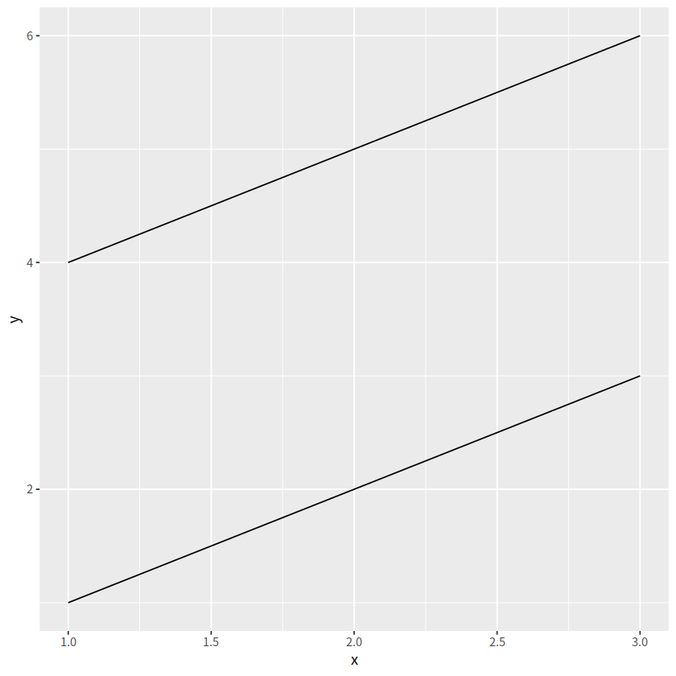
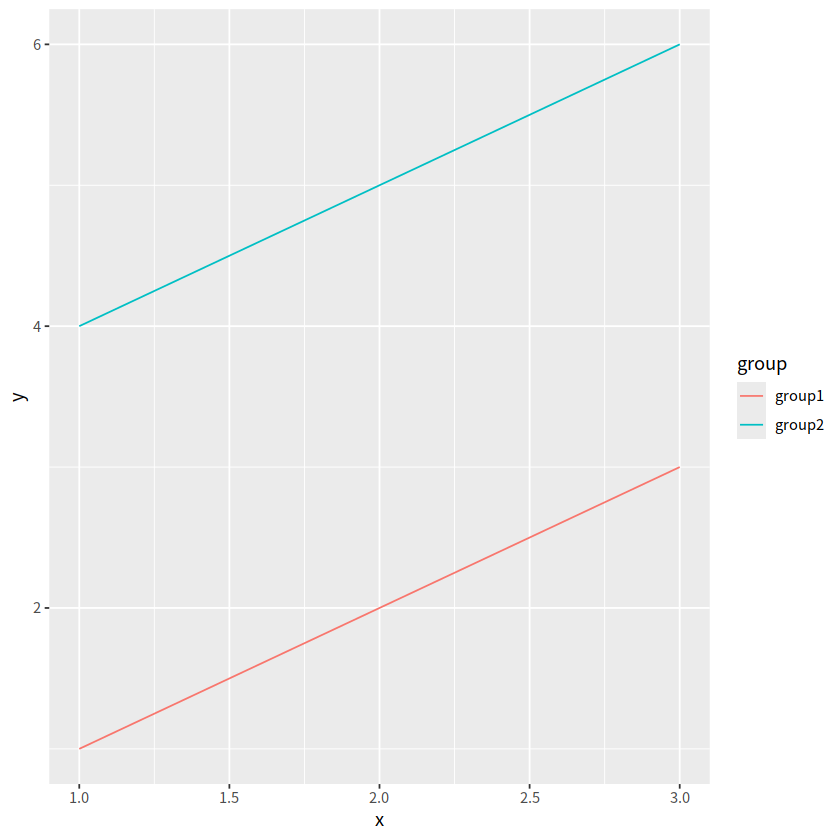
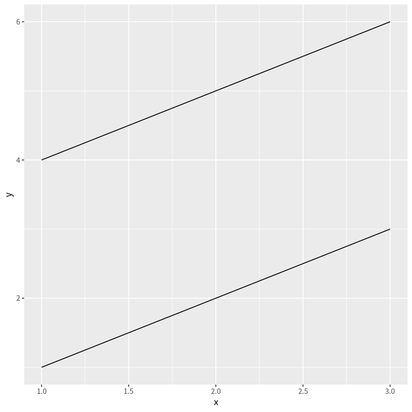
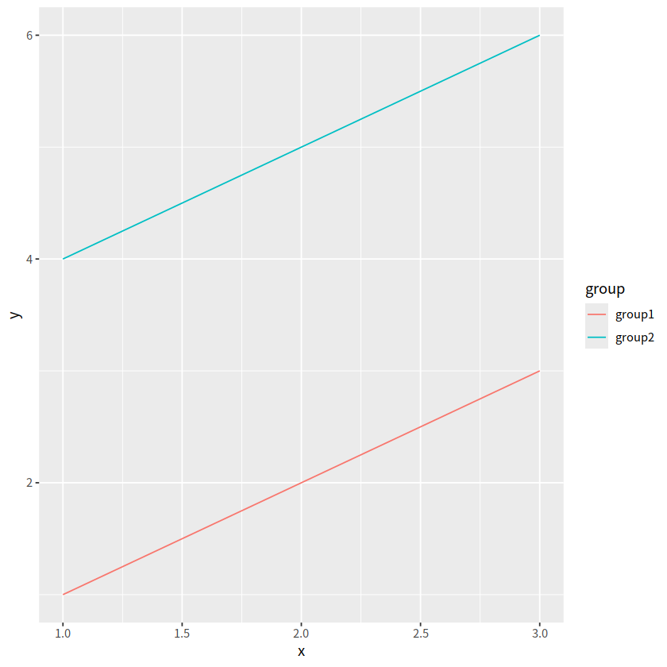

ggplot2之几何形状#
library(tidyverse)
── Attaching core tidyverse packages ───────────────────────────────────────────────────────────────────────────────────────────────────────────────────────── tidyverse 2.0.0 ──
✔ dplyr 1.1.4 ✔ readr 2.1.5
✔ forcats 1.0.0 ✔ stringr 1.5.1
✔ ggplot2 3.5.0 ✔ tibble 3.2.1
✔ lubridate 1.9.3 ✔ tidyr 1.3.1
✔ purrr 1.0.2
── Conflicts ─────────────────────────────────────────────────────────────────────────────────────────────────────────────────────────────────────────── tidyverse_conflicts() ──
✖ dplyr::filter() masks stats::filter()
✖ dplyr::lag() masks stats::lag()
ℹ Use the conflicted package (<http://conflicted.r-lib.org/>) to force all conflicts to become errors
1 图形语法#
图形语法 “grammar of graphics” (“ggplot2” 中的gg就来源于此) 使用图层(layer)去描述和构建图形，下图是ggplot2图层概念的示意图

2 图形部件#
一张统计图形就是从数据到几何形状(geometric object，缩写geom)所包含的图形属性(aesthetic attribute，缩写aes)的一种映射。
1.data: 数据框data.frame (注意，不支持向量vector和列表list类型）
2.aes: 数据框中的数据变量映射到图形属性。什么叫图形属性？就是图中点的位置、形状，大小，颜色等眼睛能看到的东西。什么叫映射？就是一种对应关系，比如数学中的函数b = f(a)就是a和b之间的一种映射关系, a的值决定或者控制了b的值，在ggplot2语法里，a就是我们输入的数据变量，b就是图形属性， 这些图形属性包括：
x（x轴方向的位置）
y（y轴方向的位置）
color（点或者线等元素的颜色）
size（点或者线等元素的大小）
shape（点或者线等元素的形状）
alpha（点或者线等元素的透明度）
3.geoms: 几何形状，确定我们想画什么样的图，一个geom_***确定一种形状。更多几何形状推荐阅读这里
geom_bar()geom_density()geom_freqpoly()geom_histogram()geom_violin()geom_boxplot()geom_col()geom_point()geom_smooth()geom_tile()geom_density2d()geom_bin2d()geom_hex()geom_count()geom_text()geom_sf()
4.stats: 统计变换
5.scales: 标度
6.coord: 坐标系统
7.facet: 分面
8.layer： 增加图层
9.theme: 主题风格
10.save: 保存图片

开始#
R语言数据类型，有字符串型、数值型、因子型、逻辑型、日期型等。 ggplot2会将字符串型、因子型、逻辑型默认为离散变量，而数值型默认为连续变量，将日期时间为日期变量：
离散变量: 字符串型, 因子型, 逻辑型
连续变量: 双精度数值, 整数数值
日期变量: 日期, 时间, 日期时间
我们在呈现数据的时候，可能会同时用到多种类型的数据，比如
一个离散
一个连续
两个离散
两个连续
一个离散, 一个连续
三个连续
1 导入数据#
后续用到的所有数据均可在https://github.com/Crazzy-Rabbit/R_for_Data_Science/tree/master/demo_data下载
gapdata <- read_csv("./demo_data/gapminder.csv")
Rows: 1704 Columns: 6
── Column specification ─────────────────────────────────────────────────────────────────────────────────────────────────────────────────────────────────────────────────────────
Delimiter: ","
chr (2): country, continent
dbl (4): year, lifeExp, pop, gdpPercap
ℹ Use `spec()` to retrieve the full column specification for this data.
ℹ Specify the column types or set `show_col_types = FALSE` to quiet this message.
gapdata %>% head()
| country | continent | year | lifeExp | pop | gdpPercap |
|---|---|---|---|---|---|
| <chr> | <chr> | <dbl> | <dbl> | <dbl> | <dbl> |
| Afghanistan | Asia | 1952 | 28.801 | 8425333 | 779.4453 |
| Afghanistan | Asia | 1957 | 30.332 | 9240934 | 820.8530 |
| Afghanistan | Asia | 1962 | 31.997 | 10267083 | 853.1007 |
| Afghanistan | Asia | 1967 | 34.020 | 11537966 | 836.1971 |
| Afghanistan | Asia | 1972 | 36.088 | 13079460 | 739.9811 |
| Afghanistan | Asia | 1977 | 38.438 | 14880372 | 786.1134 |
2 检查数据#
是否有缺失值
gapdata %>%
summarise(
across(everything(), ~sum(is.na(.)))
)
| country | continent | year | lifeExp | pop | gdpPercap |
|---|---|---|---|---|---|
| <int> | <int> | <int> | <int> | <int> | <int> |
| 0 | 0 | 0 | 0 | 0 | 0 |
基本绘图#
1 柱状图#
常用于一个离散变量
geom_bar()自动完成对相应变量的count
gapdata %>%
ggplot(aes(x = continent)) +
geom_bar()

gapdata %>%
ggplot(aes(x = reorder(continent, continent, length))) +
geom_bar()

gapdata %>%
ggplot(aes(x = reorder(continent, continent, length))) +
geom_bar() +
coord_flip()

# geom_bar vs stat_count
library(patchwork)
p = gapdata %>%
ggplot(aes(x = continent)) +
stat_count()
p1 = gapdata %>%
ggplot(aes(x = continent)) +
geom_bar()
p / p1

gapdata %>% count(continent)
| continent | n |
|---|---|
| <chr> | <int> |
| Africa | 624 |
| Americas | 300 |
| Asia | 396 |
| Europe | 360 |
| Oceania | 24 |
geom_bar() 自动完成了对对应行的count这个统计
gapdata %>%
distinct(continent, country) %>%
ggplot(aes(x = continent)) +
geom_bar()

可先进行统计，再画图，不过显然直接用geom_bar()代码更少
gapdata %>%
distinct(continent, country) %>%
group_by(continent) %>%
summarise(num = n()) %>%
ggplot(aes(x = continent, y = num)) +
geom_col()

2 直方图#
常用于一个连续变量
geom_histograms(), 默认使用 position = "stack"
gapdata %>%
ggplot(aes(x = lifeExp)) +
geom_histogram() # corresponding to stat_bin()
`stat_bin()` using `bins = 30`. Pick better value with `binwidth`.

gapdata %>%
ggplot(aes(x = lifeExp)) +
geom_histogram(binwidth = 1)

geom_histograms(), 默认使用 position = "stack"
gapdata %>%
ggplot(aes(x = lifeExp, fill = continent)) +
geom_histogram()
`stat_bin()` using `bins = 30`. Pick better value with `binwidth`.

也可以指定 position = "identity"
参数的含义是指直方图的条形应当以其实际计数（频数）堆叠在一起，而不进行任何调整
gapdata %>%
ggplot(aes(x = lifeExp, fill = continent)) +
geom_histogram(position = "identity")
`stat_bin()` using `bins = 30`. Pick better value with `binwidth`.

3 频次图#
geom_freqpoly()
gapdata %>%
ggplot(aes(x = lifeExp, color = continent)) +
geom_freqpoly()
`stat_bin()` using `bins = 30`. Pick better value with `binwidth`.

4 密度图#
geom_density()
geom_density()中adjust用于调节bandwidth,adjust = 1/2means use half of the default bandwidth.
geom_line(stat = "density")
#' smooth histogram = density plot
gapdata %>%
ggplot(aes(x = lifeExp)) +
geom_density()

gapdata %>%
ggplot(aes(x = lifeExp)) +
geom_line(stat = "density")

adjust 用于调节bandwidth, adjust = 1/2means use half of the default bandwidth.
gapdata %>%
ggplot(aes(x = lifeExp)) +
geom_density(adjust = 0.2)

gapdata %>%
ggplot(aes(x = lifeExp, color = continent)) +
geom_density()

gapdata %>%
ggplot(aes(x = lifeExp, fill = continent)) +
geom_density(alpha = 0.2)

gapdata %>%
filter(continent != "Oceania") %>%
ggplot(aes(x = lifeExp, fill = continent)) +
geom_density(alpha = 0.2)

直方图和密度图画在一起。注意y = stat(density)表示y是由x新生成的变量，这是一种固定写法，类似的还有stat(count), stat(level)
gapdata %>%
filter(continent != "Oceania") %>%
ggplot(aes(x = lifeExp, y = stat(density))) +
geom_histogram(aes(fill = continent)) +
geom_density()
Warning message:
“`stat(density)` was deprecated in ggplot2 3.4.0.
ℹ Please use `after_stat(density)` instead.”
`stat_bin()` using `bins = 30`. Pick better value with `binwidth`.
5 箱线图#
一个离散变量 + 一个连续变量
gapdata %>%
ggplot(aes(x = year, y = lifeExp)) +
geom_boxplot()
Warning message:
“Continuous x aesthetic
ℹ did you forget `aes(group = ...)`?”
数据框中的year变量是数值型，需要先转换成因子型，弄成离散型变量
gapdata %>%
ggplot(aes(x = as.factor(year), y = lifeExp)) +
geom_boxplot()

当然，也可以用group明确指定分组变量
gapdata %>%
ggplot(aes(x = year, y = lifeExp)) +
geom_boxplot(aes(group = year))

小提琴图+散点+光滑曲线
gapdata %>%
ggplot(aes(x = year, y = lifeExp))+
geom_violin(aes(group = year))+
geom_jitter(alpha = 0.25)+
geom_smooth(se = TRUE)
`geom_smooth()` using method = 'gam' and formula = 'y ~ s(x, bs = "cs")'
6 抖动散点图#
点重叠的处理方案
geom_jitter()
gapdata %>%
ggplot(aes(x = continent, y = lifeExp)) +
geom_point()

gapdata %>%
ggplot(aes(x = continent, y = lifeExp))+
geom_jitter()
gapdata %>%
ggplot(aes(x = continent, y = lifeExp)) +
geom_boxplot()

gapdata %>%
ggplot(aes(x = continent, y = lifeExp))+
geom_boxplot()+
geom_jitter(alpha = 0.25)
gapdata %>%
ggplot(aes(x = continent, y = lifeExp))+
geom_jitter()+
stat_summary(fun.y = median, colour = "red", geom = "point", size = 5)
Warning message:
“The `fun.y` argument of `stat_summary()` is deprecated as of ggplot2 3.3.0.
ℹ Please use the `fun` argument instead.”
gapdata %>%
ggplot(aes(reorder(x = continent, lifeExp), y = lifeExp)) +
geom_jitter() +
stat_summary(fun.y = median, colour = "red", geom = "point", size = 5)
注意到我们已经提到过 stat_count / stat_bin / stat_summary
gapdata %>%
ggplot(aes(x = continent, y = lifeExp))+
geom_violin(trim = FALSE, alpha = 0.5) +
stat_summary(fun.y = mean,
fun.ymax = function(x){mean(x) + sd(x)},
fun.ymin = function(x){mean(x) - sd(x)},
geom = "pointrange")
Warning message:
“The `fun.ymin` argument of `stat_summary()` is deprecated as of ggplot2 3.3.0.
ℹ Please use the `fun.min` argument instead.”
Warning message:
“The `fun.ymax` argument of `stat_summary()` is deprecated as of ggplot2 3.3.0.
ℹ Please use the `fun.max` argument instead.”

gapdata %>%
ggplot(aes(x = continent, y = lifeExp))+
geom_violin(trim = FALSE, alpha = 0.5) +
stat_summary(fun.y = mean,
fun.ymax = ~mean(.x) + sd(.x),
fun.ymin = ~mean(.x) - sd(.x),
geom = "pointrange")
7 山峦图#
常用于一个离散变量 + 一个连续变量
ggridges::geom_density_ridges()
gapdata %>%
ggplot(aes(x = lifeExp, y = continent,
fill = continent))+
ggridges::geom_density_ridges()
Picking joint bandwidth of 2.23

gapdata %>%
ggplot(aes(x = lifeExp, y = continent,
fill = continent))+
ggridges::geom_density_ridges()+
scale_fill_manual(
values = c("#003f5c", "#58508d", "#bc5090", "#ff6361", "#ffa600"))
Picking joint bandwidth of 2.23

# colorspace 调色板
gapdata %>%
ggplot(aes(x = lifeExp, y = continent,
fill = continent))+
ggridges::geom_density_ridges()+
scale_fill_manual(
values = colorspace::sequential_hcl(5, palette = "Peach"))
Picking joint bandwidth of 2.23
散点图#
常用于两个连续变量
geom_point()
gapdata %>%
ggplot(aes(x = gdpPercap, y = lifeExp))+
geom_point()

更好的 log 转化方式
scale_x_log10()scale_y_log10()
# 一般
gapdata %>%
ggplot(aes(x = log(gdpPercap), y = lifeExp))+
geom_point()

# 更好方式
gapdata %>%
ggplot(aes(x = gdpPercap, y = lifeExp)) +
geom_point()+
scale_x_log10()

着色方式
Error in eval(expr, envir, enclos): 找不到对象'着色方式'
Traceback:
gapdata %>%
ggplot(aes(x = gdpPercap, y = lifeExp))+
geom_point(aes(color = continent))
gapdata %>%
ggplot(aes(x = gdpPercap, y = lifeExp,
color = continent))+
geom_point()

gapdata %>%
ggplot(aes(x = gdpPercap, y = lifeExp))+
geom_point(alpha = (1/3), size = 2)

gapdata %>%
ggplot(aes(x = gdpPercap, y = lifeExp))+
geom_point(alpha = 0.3)+
geom_smooth()
`geom_smooth()` using method = 'gam' and formula = 'y ~ s(x, bs = "cs")'

gapdata %>%
ggplot(aes(x = gdpPercap, y = lifeExp))+
geom_point()+
geom_smooth(lwd = 3, se = FALSE)
`geom_smooth()` using method = 'gam' and formula = 'y ~ s(x, bs = "cs")'

gapdata %>%
ggplot(aes(x = gdpPercap, y = lifeExp))+
geom_point()+
geom_smooth(lwd = 3, se = FALSE, method = "lm")
`geom_smooth()` using formula = 'y ~ x'
gapdata %>%
ggplot(aes(x = gdpPercap, y = lifeExp,
color = continent))+
geom_point()+
geom_smooth(lwd = 3, se = FALSE, method = "lm")
`geom_smooth()` using formula = 'y ~ x'

gapdata %>%
ggplot(aes(x = gdpPercap, y = lifeExp,
color = continent))+
geom_point(alpha = 0.3)+
geom_smooth(lwd = 1, color = "blue", se = TRUE, method = "lm")
`geom_smooth()` using formula = 'y ~ x'

jCountries <- c("Canada", "Rwanda", "Cambodia", "Mexico")
gapdata %>%
filter(country %in% jCountries) %>%
ggplot(aes(x = year, y = lifeExp, color = country))+
geom_line()+
geom_point()

可以看到，图例的顺序和图中的顺序不太一致，
在设置color的时候可以对continent进行reorder
gapdata %>%
filter(country %in% jCountries) %>%
ggplot(aes(x = year, y = lifeExp,
color = reorder(country, -1 * lifeExp, max)
))+
geom_line()+
geom_point()

当然还有如下方式
利用if_else函数增加一列，并直接用geom_label(aes(label = end_label))讲其加入图中max那个点
gapdata %>%
filter(country %in% jCountries) %>%
group_by(country) %>%
mutate(end_label = if_else(year == max(year), country, NA_character_)) %>%
ggplot(aes(x = year, y = lifeExp,
color = country))+
geom_line()+
geom_point()+
geom_label(aes(label = end_label))+
theme(legend.position = "none")
Warning message:
“Removed 44 rows containing missing values or values outside the scale range (`geom_label()`).”

如果觉得麻烦，可以用gghighlight宏包
# install.packages("gghighlight")
library(gghighlight)
gapdata %>%
filter(country %in% jCountries) %>%
ggplot(aes(x = year, y = lifeExp,
color = country))+
geom_line()+
geom_point()+
gghighlight::gghighlight()
label_key: country
9 点线图#
geom_point() + geom_segment()
# 点图
gapdata %>%
filter(continent == "Asia" & year == 2007) %>%
ggplot(aes(x = lifeExp, y = country))+
geom_point()

# 点线图
gapdata %>%
filter(continent == "Asia" & year == 2007) %>%
ggplot(aes(x = lifeExp, y = reorder(country, lifeExp),
))+
geom_point(color = "blue", size = 2)+
geom_segment(aes(x = 40, xend = lifeExp,
y=reorder(country,lifeExp),yend=reorder(country,lifeExp)),
color = "lightgrey")+
labs(x = "Life Expectancy (years)", y = "",
title = "Life Expectancy by Country",
subtitle = "GapMinder data for Asia - 2007")+
theme_minimal()+
theme(panel.grid.major = element_blank(),
panel.grid.minor = element_blank())
10 分面#
分面有两个 -
facet_grid()-facet_wrap()
1 facet_grid()#
create a grid of graphs, by rows and columns
use
vars()to call on the variablesadjust scales with
scales = "free"
gapdata %>%
ggplot(aes(x = lifeExp)) +
geom_density()+
facet_grid(. ~ continent)

gapdata %>%
filter(continent != "Oceania") %>%
ggplot(aes(x = lifeExp, fill = continent))+
geom_histogram()+
facet_grid(continent ~ .)
`stat_bin()` using `bins = 30`. Pick better value with `binwidth`.

gapdata %>%
filter(continent != "Oceania") %>%
ggplot(aes(x = lifeExp, y = stat(density)))+
geom_histogram(aes(fill = continent))+
geom_density()+
facet_grid(continent~ .)
`stat_bin()` using `bins = 30`. Pick better value with `binwidth`.

2 facet_wrap()#
create small multiples by “wrapping” a series of plots
use
vars()to call on the variablesnrow and ncol arguments for dictating shape of grid
gapdata %>%
ggplot(aes(x = gdpPercap, y = lifeExp, color = continent))+
geom_point(show.legend = FALSE)+
facet_wrap(~continent)

11 文本标注#
ggforce::geom_mark_ellipse()
ggrepel::geom_text_repel()
gapdata %>%
ggplot(aes(x = gdpPercap, y = lifeExp))+
geom_point()+
ggforce::geom_mark_ellipse(aes(
filter = gdpPercap > 70000,
label = "Rich country",
description = "What country are they?"
))

ten_countries <- gapdata %>%
distinct(country) %>%
pull() %>%
sample(10)
ten_countries
- 'Mexico'
- 'Liberia'
- 'Myanmar'
- 'Guinea'
- 'Sao Tome and Principe'
- 'Vietnam'
- 'Puerto Rico'
- 'Algeria'
- 'Croatia'
- 'Uganda'
library(ggrepel)
gapdata %>%
filter(year == 2007) %>%
mutate(
label = ifelse(country %in% ten_countries, as.character(country), "")
) %>%
ggplot(aes(log(gdpPercap), lifeExp))+
geom_point(size = 3.5, alpha = 0.9, shape = 21,
col = "white", fill = "#0162B2")+
geom_text_repel(aes(label = label), size = 4.5,
point.padding = 0.2, box.padding = 0.3,
force = 1, min.segment.length = 0)+
theme_minimal(14)+
theme(legend.position = "none",
panel.grid.minor = element_blank())+
labs(x = "log(GDP per capita)",
y = "life expectancy")
12 errorbar图#
geom_errorbar()
avg_gapdata <- gapdata %>%
group_by(continent) %>%
summarise(mean = mean(lifeExp), sd = sd(lifeExp)
)
avg_gapdata
| continent | mean | sd |
|---|---|---|
| <chr> | <dbl> | <dbl> |
| Africa | 48.86533 | 9.150210 |
| Americas | 64.65874 | 9.345088 |
| Asia | 60.06490 | 11.864532 |
| Europe | 71.90369 | 5.433178 |
| Oceania | 74.32621 | 3.795611 |
avg_gapdata %>%
ggplot(aes(continent, mean, fill = continent))+
geom_point()+
geom_errorbar(aes(ymin = mean - sd, ymax = mean + sd),
width = 0.25)

13 椭圆图#
stat_ellipse(type = "norm", level = 0.95),也就是添加置信区间
gapdata %>%
ggplot(aes(x = log(gdpPercap), y = lifeExp))+
geom_point()+
stat_ellipse(type = "norm", level = 0.95)

14 2D 密度图#
与一维的情形geom_density()类似， geom_density_2d(), geom_bin2d(), geom_hex()常用于刻画两个变量构成的二维区间的密度
#geom_bin2d()
gapdata %>%
ggplot(aes(x = gdpPercap, y = lifeExp))+
geom_bin2d()

# geom_density2d()
gapdata %>%
ggplot(aes(x = gdpPercap, y = lifeExp))+
geom_density2d()
15 马赛克图#
geom_tile()， geom_contour()， geom_raster()常用于3个变量
gapdata %>%
group_by(continent, year) %>%
summarise(mean_lifeExp = mean(lifeExp)) %>%
ggplot(aes(x = year, y = continent, fill = mean_lifeExp))+
geom_tile()+
scale_fill_viridis_c()
`summarise()` has grouped output by 'continent'. You can override using the `.groups` argument.

事实上可以有更好的呈现方式
gapdata %>%
group_by(continent, year) %>%
summarise(mean_lifeExp = mean(lifeExp)) %>%
ggplot(aes(x = year, y = continent,
size = mean_lifeExp, color = mean_lifeExp))+
geom_point()+
scale_color_viridis_c()+
theme_minimal(15)
`summarise()` has grouped output by 'continent'. You can override using the `.groups` argument.

把数值放入点中
geom_text()
gapdata %>%
group_by(continent, year) %>%
summarise(mean_lifeExp = mean(lifeExp)) %>%
ggplot(aes(x = year, y = continent, size = mean_lifeExp))+
geom_point(shape = 21, color = "red", fill = "white")+
scale_size_continuous(range = c(7, 15))+
geom_text(aes(label = round(mean_lifeExp, 2)), size = 3, color = "black")+
theme_minimal()+
theme(legend.position = "none")
`summarise()` has grouped output by 'continent'. You can override using the `.groups` argument.

library(tidyverse)
tbl <-
tibble(
x = rep(c(1, 2, 3), times = 2),
y = 1:6,
group = rep(c("group1", "group2"), each = 3)
)
ggplot(tbl, aes(x, y)) + geom_line()
ggplot(tbl, aes(x, y, group = group)) + geom_line()
ggplot(tbl, aes(x, y, fill = group)) + geom_line()
ggplot(tbl, aes(x, y, color = group)) + geom_line()
 


